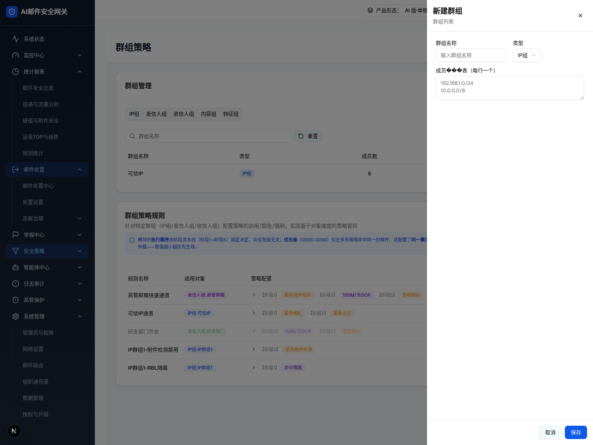

| 所属组件 | 2.1 群组管理卡片 GroupManagementCard |
| 主文件 | filter-rules-group-policy/index.html |
| 触发路径 | 群组管理卡片 → 点击「新建群组」（当前非特征 Tab） |
| demo 源 | group-policy-page.tsx GroupDrawer L1393-L1517 |
触发路径：点击「新建群组」→ showGroupDrawer=true，右侧滑入 448px 抽屉，类型默认取当前 Tab
类型下拉可展开选择；切到「特征组」抽屉会变宽（见层级 2）；输入框/文本域可输入
群组列表

| 元素 | 说明 |
|---|---|
| 抽屉宽度 | max-w-md（448px），右侧滑入，遮罩点击/取消/X 关闭 |
| 标题 | 新建群组 / 编辑群组（editingGroup 决定）；副标题「群组列表」 |
| 群组名称 | Input，placeholder「输入群组名称」 |
| 类型 | Select，默认取当前 Tab；5 选项 IP组/发信人组/收信人组/内容组/特征组 |
| 成员列表（每行一个） | Textarea rows=8，placeholder 192.168.1.0/24\n10.0.0.0/8；label 实测渲染为「成员���表」（i18n mojibake，见差异 #6） |
| 底部 | 取消（outline）/ 保存（primary） |
| 比对项 | demo 实际 DOM | 嵌入 spec 的 HTML | 是否一致 |
|---|---|---|---|
| 外层 | div.fixed.inset-0.z-50.bg-black/50（overlay） | 改为 .gp-shell（内联去全屏） | ⚠ 有意差异 |
| 面板 | div.max-w-md.h-full | max-w-md（去 h-full） | ⚠ 有意差异 |
| 节点总数 | 27 | 27 | ✅ |
| 类型 Select | 1 个 combobox | 1（可展开合成菜单） | ✅ |
| 成员 Textarea | 1（普通组渲染，特征组不渲染） | 1 | ✅ |